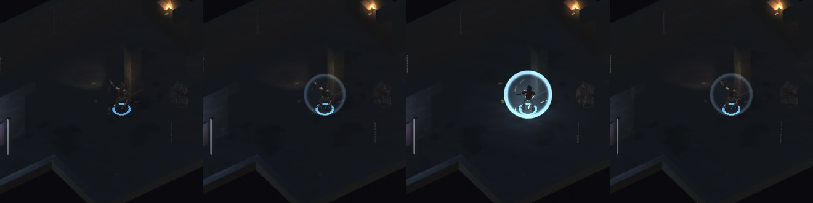
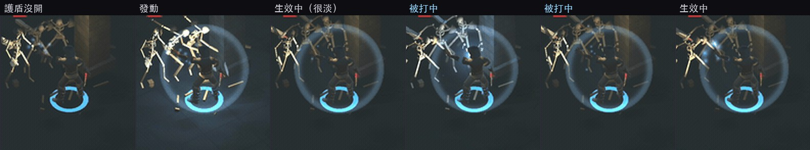
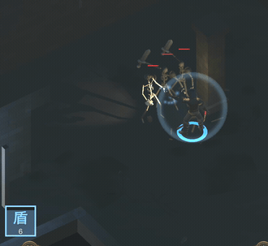

地城迴響 · Build 38
先講清楚一件事：你提到的那三個缺陷——重斬沒吃劍術精通與戰吼、 法師普攻不套用附魔、法力護盾的「隨秘能提升」沒實作——都已經修好， 而且已經在 Build 37 裡了。我上一則報告寫得不夠清楚，讓人以為只是列出發現，抱歉。 這一版補的是護盾的視覺。



為什麼是「邊緣亮、中間淡」而不是沿用既有的光暈貼圖。 既有的那張是中心最亮往外衰減，那是光團的樣子；直接拿來當護盾， 會變成角色身上糊了一坨藍光，讀起來像中了什麼狀態，不像被罩住。 護盾要讀成「一顆包住角色的泡泡」，所以貼圖反過來：中間半透明（看得到角色）、 邊緣一圈亮——那是球殼被看穿時的樣子。
只有真的吸收到才閃。魔力見底、傷害整份落到血上的時候不會亮， 因為那正是玩家最需要知道「護盾已經擋不住了」的時刻。
平常也要看得見一點。只有被打才亮的話，玩家不知道護盾還在不在； 只有常亮的話，「這下被擋掉了」又沒有回饋。所以兩段都要。
傷害走真實路徑（同一支 ApplyPlayerDamage，閃光就掛在它的吸收分支上）。
錄影那段則關掉驗證用的無敵、改成每幀補滿血魔，讓真的敵人打真的傷害——
無敵旗標會在扣血之前就 return，吸收邏輯根本不會跑，錄出來護盾永遠不會亮。
| 平均藍色優勢 | 明顯偏藍的像素數 | |
|---|---|---|
| A 沒有護盾 | 5.96 | 29 |
| B 護盾開著沒被打 | 6.43 | 134 |
| C 被打的那一下 | 9.51 | 631 |
| D 0.75 秒之後 | 6.48 | — |
量法本身修了一次，這個值得記。第一版所有項目都用「視窗平均亮度」判， 結果「護盾開著看得出來」這一項在 0.43～0.60 之間跳，而門檻 0.5 剛好落在雜訊帶裡 ——同一份程式碼有時過有時不過。原因是平常那圈罩子是很細的一圈邊， 會被整個視窗的平均稀釋掉。
改成用「明顯偏藍的像素數」判那一項（29 → 134，連跑兩次都一樣）， 受擊那一下仍用平均值判（那是整片亮起來）。兩種統計量回答的是不同問題， 不能都用同一個。
參數也是量出來的，不是調到順眼為止：.22/1.00 受擊差 3.19、不夠有存在感；
.13/1.35 差距拉開了但平常幾乎看不見（只比沒護盾高 0.32）；
最後是 .22/1.35。關鍵是受擊那一階要靠拉高受擊值，
不是靠壓低平常值——壓低平常值也能讓比值變好看，但那是犧牲另一項換來的。
已出 Build 38，狀態 VALID，可以直接測。掉率維持測試值 8%。